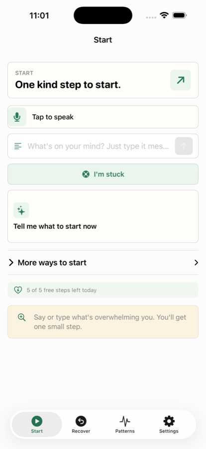
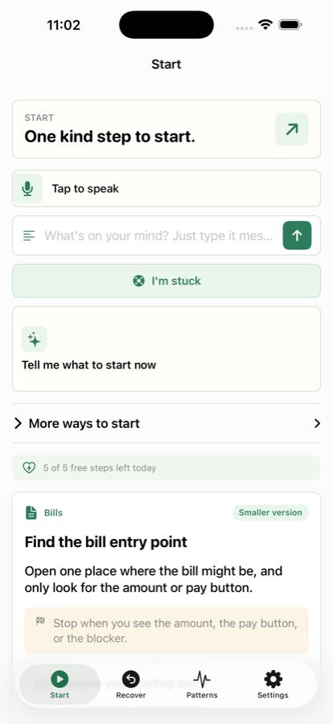
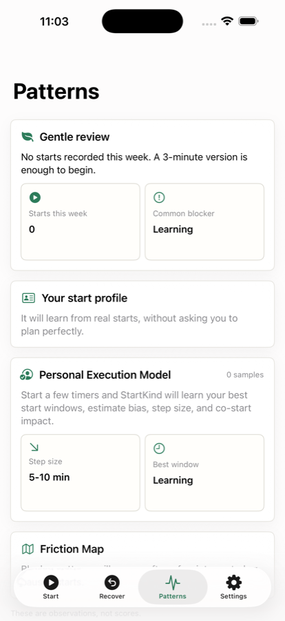

Voice to one step说一句话，得到一步
Say it however it comes out. You get one concrete action that fits in 5–15 minutes, with a stop condition.怎么想的就怎么说。你会得到一个 5–15 分钟内能做完的具体动作，并且写明在哪里停。
iPhone · Apple Watch · WidgetsiPhone · Apple Watch · 小组件
For adults with ADHD, knowing what to do is rarely the problem — starting is. Say the messy sentence out loud and StartKind gives you one action small enough to begin right now. 对成人 ADHD 来说，难的往往不是“知道要做什么”，而是“开始”。把那句乱糟糟的话说出来，StartKind 会给你一个小到可以立刻开始的动作。

Screenshots from the current build.取自当前版本的真实截图。


The whole loop: capture, one step, a timer, and a kind way back.完整闭环：捕捉、一个步骤、计时、以及温和地回来。
Say it however it comes out. You get one concrete action that fits in 5–15 minutes, with a stop condition.怎么想的就怎么说。你会得到一个 5–15 分钟内能做完的具体动作，并且写明在哪里停。
5, 10, 15 or 25 minutes. Stop early and the step shrinks instead of failing. Live Activity keeps it on the Lock Screen.5、10、15 或 25 分钟。提前停下时，步骤会自动变小，而不是判定失败。实时活动让它留在锁屏上。
One tap turns whatever you were doing into something smaller. No explanation required.一次点击，把手上的事变得更小。不需要解释理由。
Interrupted work becomes a Recovery Capsule with your own return note, so tomorrow you resume instead of restarting.被打断的工作会变成“恢复胶囊”，带着你自己写的返回备注，第二天是继续，而不是重来。
Paste or scan a bill, letter or appointment. StartKind pulls out the facts and hands back one startable step.粘贴或扫描账单、信件、预约通知。StartKind 提取关键信息，只给一个能开始的步骤。
A quiet 25-minute room. Share a six-digit code; joining is always free and needs no account.一个安静的 25 分钟房间。分享六位数字码即可，加入永远免费且不需要账号。
No streaks. No overdue pile. No shame. StartKind never scores you, and it never shows a backlog of everything you did not do. 没有连续打卡，没有逾期堆积，没有羞耻感。StartKind 不给你打分，也不会把你没做完的事堆在你面前。
The core loop is free forever. Plus removes the daily ceilings.核心闭环永久免费。Plus 去掉每日上限。
Subscriptions are billed through your Apple ID and renew automatically unless cancelled at least 24 hours before the period ends. Manage or cancel any time in Settings › Apple ID › Subscriptions. 订阅通过你的 Apple ID 扣费，除非在当期结束前至少 24 小时取消，否则会自动续订。你可以随时在「设置 › Apple ID › 订阅」中管理或取消。
A real person reads these. Expect a reply within two business days.回信的是真人。通常两个工作日内回复。
billy.yu@me.com
Please mention your iOS version and what you were doing when it happened.
请附上你的 iOS 版本，以及问题发生时你在做什么。
Open Settings inside the app and tap Restore purchases. Plus follows your Apple ID across your devices.打开 App 内的「设置」，点「恢复购买」。Plus 会跟随你的 Apple ID 在各设备生效。
Settings › Delete data removes everything from the device. Your history lives in your own iCloud, so removing the app removes it with you in control.「设置 › 删除数据」会清除本机上的一切。你的历史保存在你自己的 iCloud 中，主动权始终在你手上。
StartKind is not a medical device. It helps you organise and begin tasks. It does not diagnose or treat ADHD, and it gives no medication advice. For diagnosis, medication or treatment decisions, please talk to a qualified clinician. StartKind 不是医疗设备。它帮助你整理和开始任务，但不能诊断或治疗注意缺陷多动障碍（ADHD），也不提供任何用药建议。如需诊断、用药或治疗决定，请咨询合格的临床医生。
Last updated 27 August 2026.最后更新：2026 年 8 月 27 日。
StartKind is licensed to you for personal, non-commercial use on devices you own. Please do not resell it, or try to break, overload or reverse-engineer the service.StartKind 以个人非商业用途授权给你，在你拥有的设备上使用。请勿转售，也请勿破坏、过载或逆向该服务。
Plus is an auto-renewing subscription billed by Apple. Payment is charged to your Apple ID at confirmation. Refunds are handled by Apple, not by us.Plus 是通过 Apple 扣费的自动续订订阅，确认购买时从你的 Apple ID 扣款。退款由 Apple 处理，不由我们经手。
The app is provided as is. We work to keep it available and correct, but we cannot guarantee uninterrupted service, and StartKind is not responsible for decisions you make about your own tasks.App 按现状提供。我们会努力保持可用与正确，但无法保证服务永不中断；对于你就自己任务所做的决定，StartKind 不承担责任。
What you write stays yours. It is stored in your own iCloud account, not on our servers. See the privacy policy for the detail.你写下的内容归你所有，保存在你自己的 iCloud 账户中，而不是我们的服务器上。细节见隐私政策。
If these terms change materially, the updated date above changes and the new version is published here before it takes effect.如条款有实质性变更，上方的更新日期会随之变化，新版本会在生效前发布于此。
Questions about these terms: 关于本条款的疑问：billy.yu@me.com